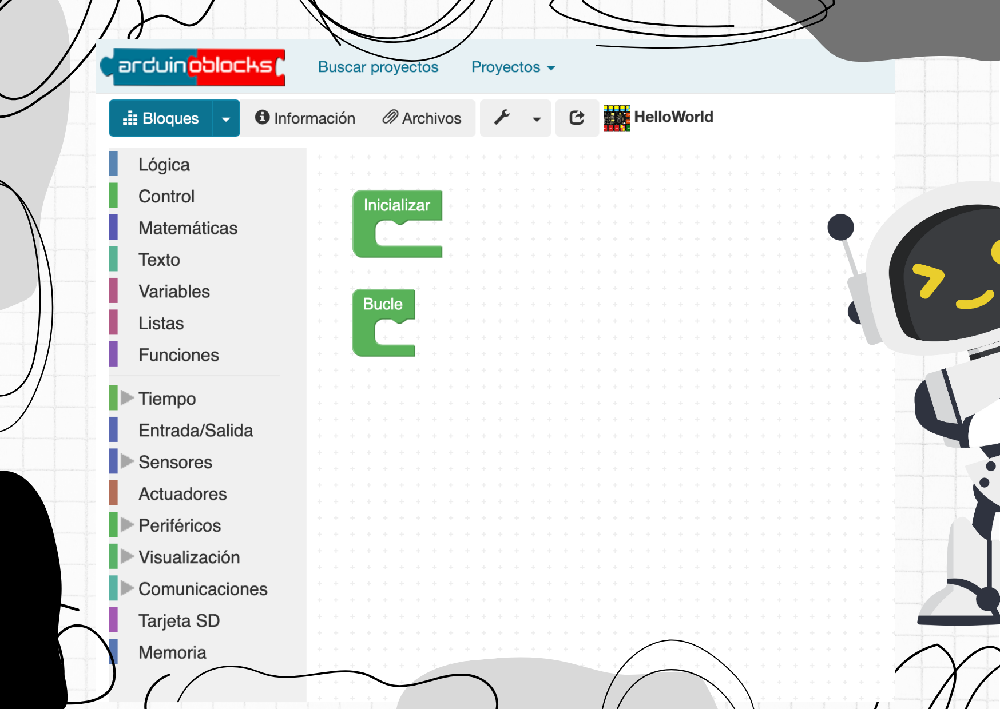
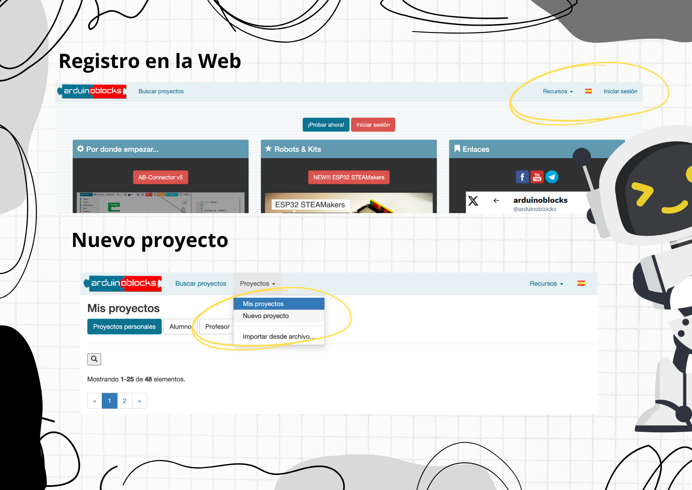
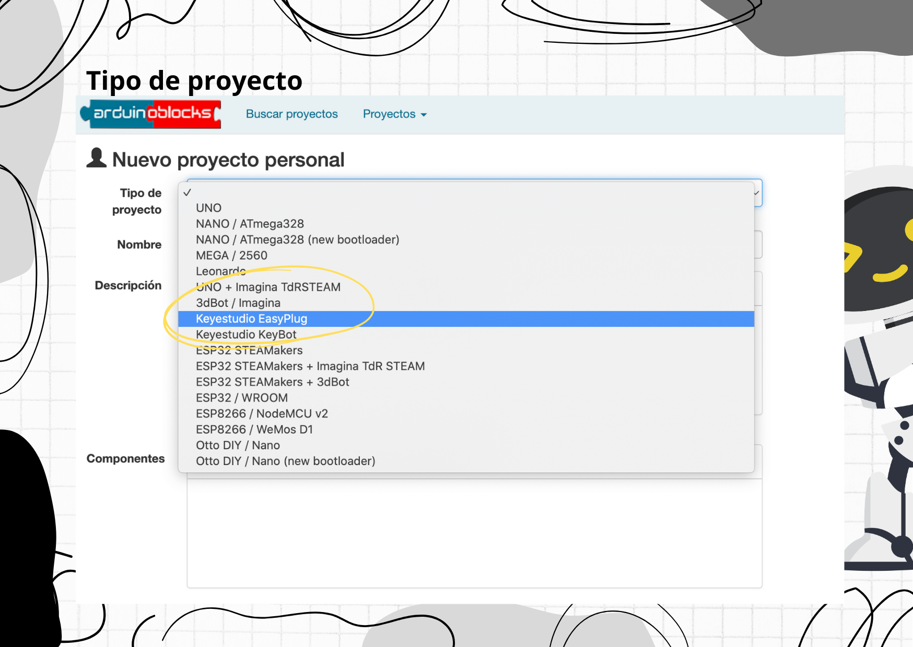
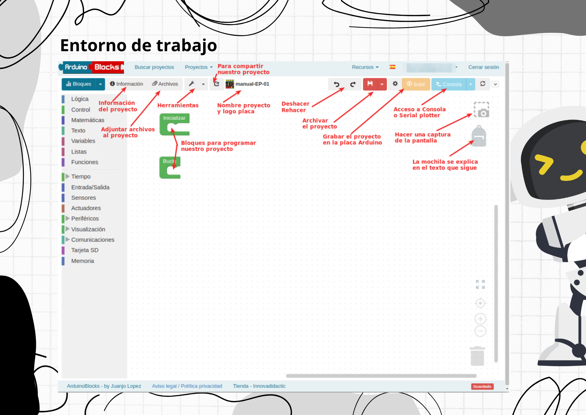

ArduinoBlocks
ArduinoBlocks es un lenguaje de programación por bloques o gráfico creado por el profesor Juanjo López. Está ideado para que se pueda aprender a programar desde edades tempranas de una manera intuitiva y divertida desde una web. Los distintos bloques sirven para leer y escribir las distintas entradas y salidas de la placa, así como programar funciones lógicas, de control, etc.

Para programar, debemos registrarnos en la web www.arduinoblocks.com con un correo electrónico válido, para guardar los proyectos, añadir información a nuestros proyectos y ver proyectos de otros usuarios que hayan decidido compartirlos de forma pública.
Será necesario validar la cuenta en el correo recibido en nuestra dirección de correo (sin no aparece en “Bandeja de entrada”, revisar la carpeta “Spam” o “Correo Basura”) y validar clicando sobre el link recibido.

En el menú de “Tipo de proyecto”, ArduinoBlocks permite programar varios tipos de placas Arduino y diferentes Robots, en nuestro caso seleccionaremos la opción “Keyestudio Easy Plug”.
Esta opción nos presentará los menús necesarios para poder programar nuestra placa de forma fácil y sencilla con las funciones preparadas expresamente para la Easy Plug. Una práctica muy recomendable es ir documentando los proyectos que se van haciendo, para ello la plataforma de ArduinoBlocks dispone de un menú de cada proyecto en el que se pueden anotar el “Nombre del proyecto”, una “Descripción”, los “Componentes” del proyecto
y “Comentarios”.

